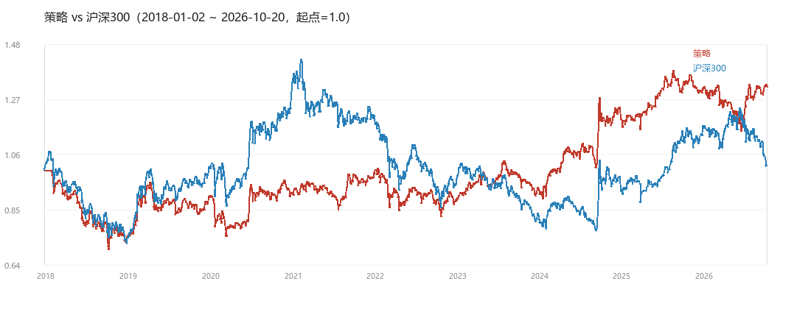
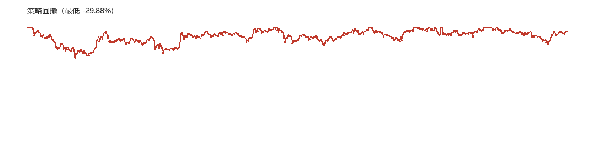
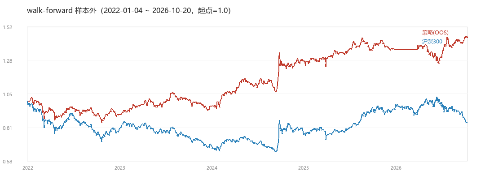

这是“如果按这套规则做，历史上会是什么结果”的模拟，不是实盘收益。所有数字都可以在项目里复现（见文末路径）。



样本外 = 每年只用“之前的数据”选参数，再用当年数据检验。它比全周期回测可信，因为它不允许“偷看未来”。
| 年份 | 策略 | 沪深300 |
|---|---|---|
| 2018 | -26.27% | -26.34% |
| 2019 | +22.47% | +37.95% |
| 2020 | +1.56% | +25.51% |
| 2021 | +7.09% | -6.21% |
| 2022 | -10.17% | -21.27% |
| 2023 | +5.30% | -11.75% |
| 2024 | +32.46% | +16.20% |
| 2025 | +7.83% | +21.19% |
| 2026 | +0.96% | -11.51% |
大账户是“看着大盘”的组合；小账户是给你未来实盘练手的（2000 元、最多 3 只、整手）。
策略净值：data/store/portfolio_results/nav_000300_top50_reb20.parquet
样本外净值：data/store/walkforward_results/nav_oos_000300.parquet
影子盘账本：data/store/sim/ledger.sqlite / ledger_2000.sqlite
生成脚本：scripts/15_dashboard.py（本页由它生成）